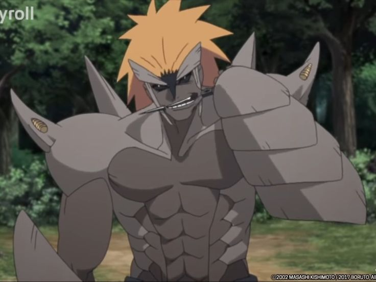
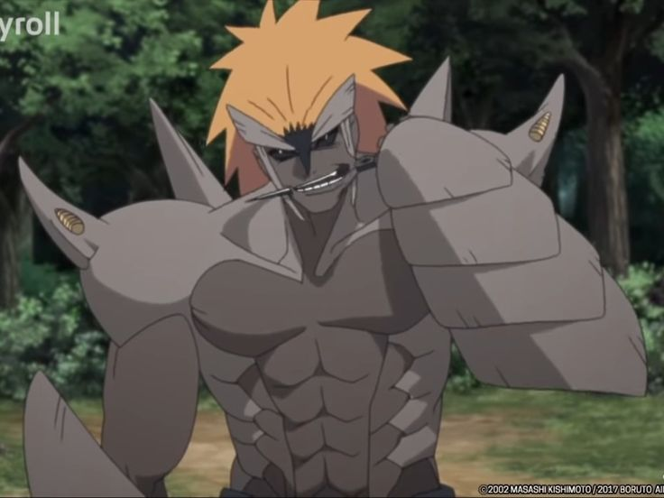
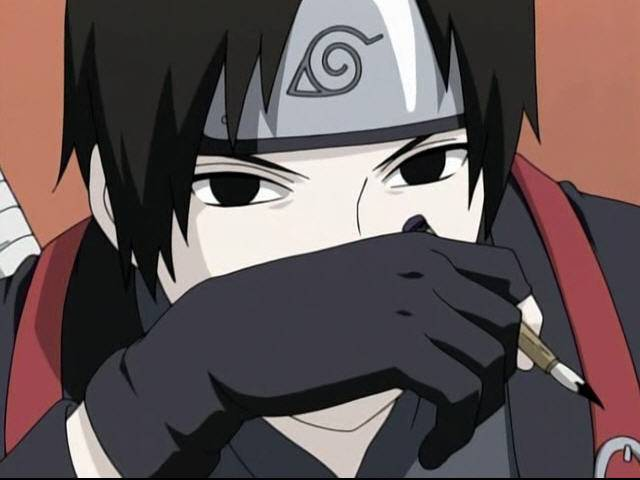
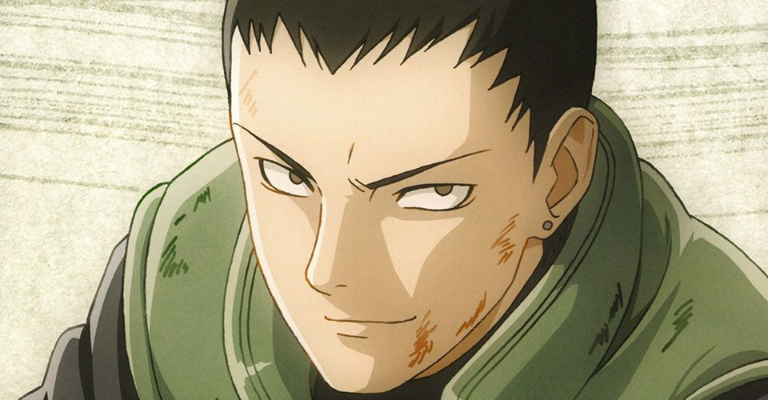
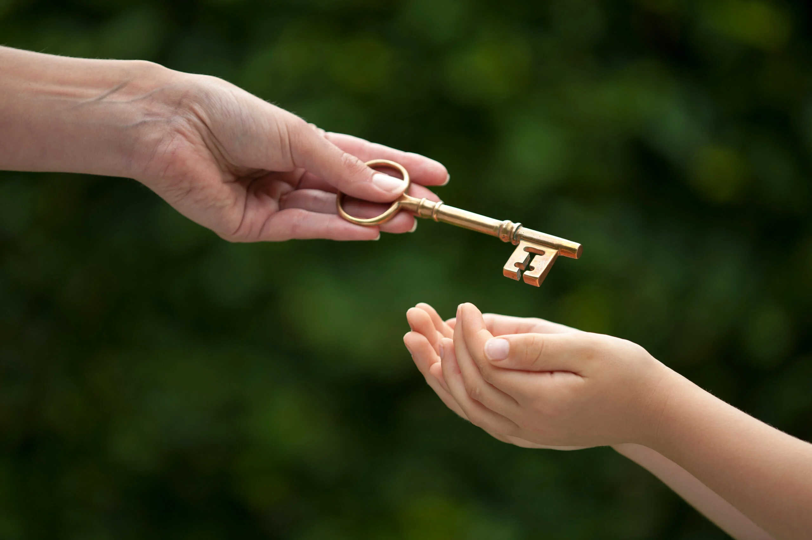

FSC
French Server Community
 

Qui est Asahi Ashura
Asahi est un jeune Ashura et ninja du village de Suna, âgé de 13 ans seulement il mesure 1.56m, dû à sa prédisposition au contrôle du chakra et au connaissance actuel de Asahi, il sortira de l'académie à l'âge de 13 ans seulement. Il maîtrise le Raiton et le Kiminari. Ne pouvant pas utiliser ses capacités spécial à cause du chef de clan actuel, l'entraînement physique se porte essentiellement sur le kenjutsu, le ninjutsu et le maniement des shurikens. Il a une appétence pour le combat et l'art de la stratégie Militaire. Dès son plus jeune âge, Asahi n'arrivera pas à se lier avec les autres enfants de son âge bien qu'il essayera tant bien que mal car il est assez réservé de nature.
Intellectuel
stratégique
Curieux
touche à tout
Sens de l'Honneur
infaillible
Calculateur
de naissance

Maniaque
Routine parfaite
Solitaire
Contre son gré

Dès sa naissance, Asahi a été très entouré par des adultes tels que des domestiques et son chef de clan Sora, il ne côtoyait pas beaucoup d'autres enfants. Asahi s'est révélé être un enfant très curieux et rempli de surprise, il se mettait constamment en danger pour tester ses limites, il était très téméraire et avait une volonté indomptable. Il avait beau être difficile à vivre, il restait un simple enfant bien que parfois sans crier gare il pouvait changer de comportement en un seul instant passant de la joie à des pleurs inexplicable. Mais dans la globalité il adorait courrir un peu partout et découvrir de nouveaux insecte à capturer. Le reste de son temps il écoutait des histoires d'adulte ou alors s'entraînait au corps à corps ainsi qu'aux kunais !
"Il est bizarre cette insecte je l'aime bien !"
-Asahi Ashura

Asahi mettra toujours les intêrets de son clan avant sa propre personne et avant son propre honneur même, il ne supportera pas que quiconque dénigre son clan ou qu'une peresonne intérieur au clan face honte à ce dernier. Cependant il est très attaché au membre de sa famille qu'il voit un peu comme son seul repère il restera proche d'eux et de la famille, il sera surprotecteur envers ces derniers, petit à petit les seuls personnes avec qui il arrivera a nouer par recommendation de son chef de clan seront les kusamaru. Etant donné que ce dernier apprécie énormement son clan, il est prêt à tout et même à mentir, manipuler si il le faut afin de rehausser la stature de son clan, bien que dans le fond il soit calculateur, il aura du mal à manipuler les gens à cause de sa naïveté. Il essayera de faire en sorte que personne ne se sente seul au sein du clan et que personne ne reste à la ramasse.

"vous êtes ma chair et mon sang alors vous partagerez mon coeur !"
-Asahi Ashura

Asahi avait désormais 13 ans et commençait enfin sa vie de ninja, aussi impétueux était t-il il redoutait toujours ce moment, mais il était enfin la et asahi était décidé à l'accueillir comme il se doit, il partit alors fièrement annoncer la nouvelle à son chef de clan qui en était déjà au courant. Sora lui expliquera alors qu'il y'a de nombreux arts et de nombreuses institutions au sein du village qui devrait l'intéresser pour son futur, qu'il aurait des valeurs à défendre, mais autre chose, asahi était fier et voulait l'exposer à tout le monde malheureusement, sora lui expliquera qu'il sera obligé de faire profil bas si il ne veut pas eveillé sa colère, le jeune ne l'entendra pas d'une bonne oreille mais s'y conformera par dépit, soumission, discretion et discipline était à l'ordre du jour des sa nouvelle vie de ninja. Cependant sa nature profonde restera inchangé il restera toujours ce asahi rêveur, ambitieux, têtu et combatif.

"La stratégie c'est moi !"
-Asahi Ashura
Objectif 1 :
Le premier objectif du jeune Ashura sera de monter les échelons afin de montrer sa valeur et surtout pour qu'on puisse le considérer au sein de son clan, afin que sa parole est enfin un poid devant le chef de clan, afin d'abolir le système qui nous empêche d'utiliser nos compétences, ce qui est une discrimination imposé au sein même de notre clan par rapport aux autres clans. Il permettra ainsi à ses frères de se défendre aussi bien que possible et de montrer à tout suna que les compétences des ashura ne sont pas faite pour blessé mais pour protéger ce pays. C'est naturellement qu'il esperera alors devenir le prochain chef de clan, il trouvera que Sora était un bon chef de clan mais que sa seul faute à été d'imposé un système discriminatoire envers son propre clan, il aspirera alors à le surpasser et à faire prospérer les ashura en léguant ainsi le flambeau à une personne digne de faire prospérer le clan.

Objectif 2 :
Le jeune Ashura dans son enfance ne comprenait pas réellement l'enjeu de la stratégie militaire, il se contentait de dire que la stratégie c'était lui sans trop s'en soucier, cependant en découvrant l'art de la guerre, petit à petit la stratégie prendre une place très importante dans la vie de ashura, à un tel point que ce dernier aspirera à devenir gérant de cette branche. Ainsi il n'aura jamais mentis la stratégie continuera à être lui mais pas dans le même sens qu'auparavent, il réfléchira rigoureusement et créera diverses escouades au sein même de la branche stratégique afin de planifier des plans en fonction des modes de pensé de chacun, ceux fonctionnant le mieux monteront alors par mérite. Il dédiera alors tout cet art pour le bien de suna et pour montrer qu'il est capable de réfléchir.
Objectif 3 :
Plus tard, Asahi mettra un point d'honneur à laisser un véritable héritage au sein même de son clan, non pas forcément par le phsique mais aussi par la morale. Il tâchera de récupérer divers artefacts permettant ainsi à son clan d'instaurer un climat de respect et de reconnaissance, ainsi plus personne n'osera discriminer, insulter ou encore tuer au sein de son clan, il ne souhaite cependant pas instaurer un climat de peur il s'assurera alors de laisser des écrits pour les générations futur, afin que plus jamais les ashura n'est à souffrir ils auront toute les cartes entre leurs main, psychologique, moral et désormais même puissance si quiconque voudrait s'y attaquer. Il laissera en dernier héritage une figure forte, un membre de son clan dans le très haut commandemant afin de guider les plus jeunes.


Raiton
Kiminari
Ashura
Le raiton, art d'utiliser la foudre sera la nature de chakra principal de asahi des son plus jeune âge, une nature de chakra lui allant parfaitement, symbolisant la rapidité du changement de ses émotions, il s'entraînera rigoureusement à manier cette nature.
Asahi maitrise le Kiminari aussi appelé "foudre noir" est un attribut génétique rare, c'est une forme dérivée et unique du raiton, elle dépasse la vitesse et la force brute du raiton, faisant de ce kekkei genkai une vraie force offensive.
Les membres du clan Ashura sont généralement décrit par une même chose, leurs émotions brusque, leurs pouvoir naquis alors de ces mêmes émotions, à l'instar du clan uchiha leur force réside dans la force physique et dans leur sang.
-Taille :
1.56m
-Poids :
54kgs
-Corupulence :
Musculature assez développée
-Cheveux :
long et noir
-Traits :
Traits fins hérités de sa mère
Qualités
- Bienveillant
- Autodidacte
- loyal
- Honnête
- Têtu
- Créatif
Défauts
- têtu
- sang-chaud
- Solitaire
- Peu sociable
- très expressif
- Changement d'émtions brusque

je m'appelle Adam, j'ai 20 ans et je suis un immense fan de Naruto.
Il faut se dire que Naruto est un des animes qui a bercé mon enfance, j'ai commencé à regarder Naruto sur la 11 puis sur GameOne et enfin en streaming.
Lorsque j'ai découvert la FSC j'y ai vu une sorte d'alliance entre Mon anime préféré et mon type de jeu préféré, le RP, j'aimerais donc pousser l'expérience encore plus loin avec ce deuxième rp clan dans un village tout nouveau pour moi.
Je pense pouvoir apporter ma petite touche personnelle au sein de ce rp, mais je pense aussi que ce rp clan très axés émotions pourrait m'être tout autant bénéfique pour mon expérience sur le monde du rp.
je suis disponible tous les jours de 16h à 3H (sauf 1 semaine sur 4 ou je ne peux qu'a partir de 18h jusqu-à 01h00), on pourra donc me retrouver sur le serveur de façon actif tous les jours.
Etant un ancien joueur de RP, (commencé sur Habbo Hotel) et étant passé par du rp écrit, il n'y avait pas vraiment de "pvp" auparavant, je suis donc beaucoup plus un joueur Serious RP qui aime créer des scènes et les vivres à fond que de faire du pvp même si selon moi le pvp n'est jamais disociable du rp surtout sur un narutorp.

Voici Habbo Hotel, les plus anciens reconnaîtront, j'ai commencé les jeux vidéos très tôt et j'ai commencé avec Habbo Hotel, Je ne pourrais pas vous dire combien de temps j'ai passé à faire du rolePlay dessus car je n'étais encore qu'un enfant mais je peux vous assurez que le rp sur ce jeu a bercé mon enfance un long moment.
C'est bien Minecraft, vous ne rêvez pas, je faisais du rp sur minecraft, sur ma ps4, lorsque j'étais adolescent des serveurs minecraft était crées pour rp sur ps4, c'était ma première vrai expérience avec un chat vocal. J'y ai accordé un peu plus de 700 heures.
Je pense que tout le monde reconnaît ce logo, c'est bel et bien celui de FiveM, pas besoin de vous expliquez ce qu'est fiveM, je pense que tout le monde connait assez bien le gtaRP. GTARP c'est très simple, j'y ai joué avec des potes et j'y rejouerais encore et encore dans le futur je pense (Insh'Allah gta6 bientôt). J'ai accordé à ce jeu un peu plus de 2000 heures de jeu.
Et nous voilà sur Gmod, Sur ce compte Steam la, il n'y a donc que mes heures de jeu sur FSC NarutoRp, à noté que j'ai pu tester 2 slots, un qui est niveau 220 avec le Kiminari et un autre ou j'ai pu testé le Shakuton qui est niveau 90, je regroupe plus de 1200H de jeu sur FSC NRP.

Mon premier personnage fut Setsushi Nadeko, il est très vite passé Chunin et a intégré la Chifu, dès qu'il était Genin, il décida de former un groupe de personnes intelligentes et fortes, pour les recrutements un sensei s'en occupait, dès lors un grand groupe de Ame vu le jour, "La brume écarlate".
C'était donc un groupe de 14 personnes qui se réunissait assez souvent au pays neutre pour discuter et surtout, l'objectif de ce groupe était de faire en sorte que les "faibles" soient écoutés à Ame, mais petit à petit l'objectif dériva et l'organisation était devenu un groupe de traque envers les traîtres d'Ame. Setsushi décida de rester Chunin afin de montrer qu'on pouvait être à la tête d'une organisation sans forcément "être fort".
Avec ce personnage je réussissais donc à créer mes propres scènes et à en faire profiter les autres, malheureusement Setsushi, chef de la brume écarlate succomba après être resté chunin 5 semaines (5 ans in game).
Voici mon deuxième personnage, Tetsuya Kando (Kakunin), un jeune nukenin originaire d'Amegakure. C'est un sociopathe manipulateur qui n'a pas hésité à torturer un camarade, empoisonner un orphelin, ou encore tuer une personne qui pensait être son ami. J'enquêtais sur Ichibi avec un groupe de 4 personnes, j'ai donc exploité cette trame afin de créer de nombreuses scènes pour moi-même et d'autres joueurs, notamment en enquêtant sur le pacte qu'avait fait Ame et sur les membres du culte. Je m'étais infiltré au sein des scientifiques de Suna. Je me suis aussi infiltré à Konoha à plusieurs reprises, me faisant passer pour un "commandant genin" ou encore un chunin. Des rapports étaient régulièrement faits à Shinda Nakara (membre du conseil d'Ame), même si les rapports ne dévoilaient pas tout car je manipulais celui-ci aussi. Je suis actuellement en trame dans la forêt interdite (je n'en dis pas plus pour ne pas spoiler).

Grade atteint : - Jonin de Konoha
- lié à de nombreuses trames
- Section : Militiaire
- Fils de Aitsujin Uchiha et petit fils de Satsujin Uchiha
- Rp autour des nukenins et déserteurs
- Membre de la division 0
Pourquoi Moi?
Fort de mes différentes expériences RolePlay, j'ai pu à diverses reprises faire du Serious RP et surtout toujours m'investir au sein des divers rp que j'ai commencés. Même dans la vie en général je m'investis toujours dans ce que j'entreprends, je pense que cette candidature en est la preuve même, elle a été codé de A à Z par mes propres soins.
Il va sans dire que ceci n'est qu'un reflet de ma motivation et qu'en jeu, je m'impliquerais encore bien plus que cela dans ce rp clan.
Discord : Tyro2
Mes respects,
Adam.
Merci de m'avoir lu !